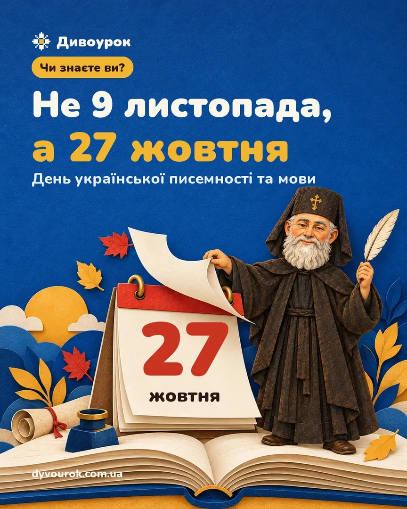

День писемності та мови 2026: ідеї для уроку на 10 хвилин і Радіодиктант
Чому 27 жовтня, а не 9 листопада

Досі в шкільних планах трапляється стара дата, тож коротко. День української писемності та мови пов'язаний з днем пам'яті преподобного Нестора Літописця. Після переходу Церкви на новий календар цей день припадає на 27 жовтня, і 2023 року свято перенесли указом Президента № 455/2023. Тож від 2023 року відзначаємо 27 жовтня, а 2026 року це вівторок.
Нестор — чернець Києво-Печерського монастиря. З його іменем традиційно пов'язують «Повість минулих літ», упорядковану близько 1113 року. Звідси й слово «літопис»: колись «літом» називали цілий рік, і події записували рік за роком.
Радіодиктант національної єдності 2026: коли й де
Радіодиктант проводять щороку від 2000 року. 2026-го він відбудеться 27 жовтня. Суспільне транслюватиме його наживо:
- на Українському радіо та «Радіо Культура»;
- на YouTube-каналі Українського радіо;
- на телеканалі «Суспільне Культура» та його YouTube-каналі;
- у застосунках suspilne.radio і «Дія».
Писати можна всім класом: увімкніть трансляцію на дошці чи проєкторі, а після диктанту звірте текст разом.
5 ідей для уроку на 10 хвилин
Кожна працює без підготовки й підходить для будь-якого класу. Біля ідей позначено, як їх ускладнити для старших.
-
Шифр глаголицею
Глаголиця — найдавніша відома слов'янська абетка, її створив Кирило. Напишіть на дошці слово ⰏⰑⰂⰀ і дайте ключ:
Ⰿ Ⱁ Ⰲ Ⰰ М О В А Хто прочитає першим? 5–11 клас Дайте лише ключ і попросіть записати глаголицею власне ім'я.
-
Літопис класу
Кожен дописує один рядок за зразком «В літо 2026…» і подію з життя класу. Наприкінці вийде справжній літопис, який можна повісити на стіну. 5–11 клас Обговоріть, чим запис у літописі відрізняється від легенди і чому історики пишуть «за літописом».
-
Слово-скарб
Кожен називає своє улюблене українське слово й пояснює, чому саме воно. Записуйте на ватман — це ваш словник класу на рік.
-
Рядок по пам'яті
Молодші відновлюють рядок Тараса Шевченка:
Садок вишневий коло хати,
хрущі над вишнями гудуть…5–11 клас Рядки з послання «І мертвим, і живим…» (1845):
Учітесь, читайте,
І чужому научайтесь,
Й свого не цурайтесь.Дві хвилини на дискусію: як поєднати «чужому научайтесь» і «свого не цурайтесь» сьогодні?
-
Свій радіодиктант
Якщо трансляція не збігається з розкладом, проведіть міні-диктант: 3–4 речення про рідну мову. Читаєте ви, пишуть усі, перевіряють у парах.
Герої свята в п'яти датах
Щоб розповісти історію писемності за хвилину, вистачить п'яти дат:
- 863 — брати Кирило і Мефодій вирушають з місією до слов'ян, Кирило створює глаголицю.
- ≈1113 — з іменем Нестора традиційно пов'язують «Повість минулих літ».
- 1840 — виходить «Кобзар» Тараса Шевченка.
- 1884 — у журналі «Зоря» вперше з'являється підпис «Леся Українка».
- 1899 — виходить збірка казок Івана Франка «Коли ще звірі говорили» з «Фарбованим Лисом».
Потрібен готовий урок на 45 хвилин?
«Машина часу рідної мови» — квест для дошки за цими п'ятьма епохами: на кожній зупинці мультфільм, де класик сам розповідає про себе, і завдання для всього класу. Є версії для 1–4, 5–7 і 8–11 класу, роздатка й сценарій. Одну зупинку можна пройти з класом безкоштовно.
Спробувати безкоштовноДжерела
- Указ Президента України № 455/2023 — zakon.rada.gov.ua/laws/show/455/2023
- Православна церква України, календар на 2026 рік (пам'ять Нестора Літописця — 27 жовтня) — pomisna.info
- Українське радіо про Радіодиктант національної єдності — ukr.radio
- Освіторія: «Радіодиктант-2026: коли писатимемо та де дивитися» — osvitoria.media
- Т. Шевченко, Повне зібрання творів, т. 1 — «І мертвим, і живим…» — litopys.org.ua
- Internet Encyclopedia of Ukraine: Saint Cyril; Nestor the Chronicler — encyclopediaofukraine.com